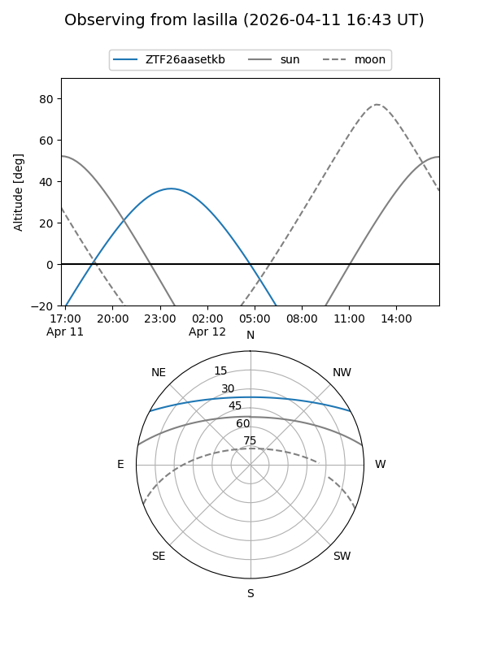
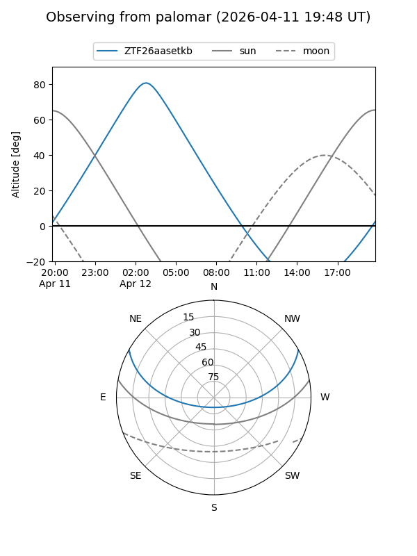

ZTF26aasetkb
Target ZTF26aasetkb at 2026-04-12 06:53
Aliases and brokers:
FINK: link
Lasair: link
ALeRCE: link
alt names
ZTF26aasetkb (ztf,fink_ztf)
Coordinates:
equatorial (ra, dec) = 124.7412,+24.31519
equatorial (HMS+DMS) = 08:18:57.89,+24:18:54.69
galactic (l, b) = (198.8841,+29.34206)
Flags:
Photometry:
last ztfg=19.94
2 ztfg detections
Lightcurve
Visibility


Additional plots